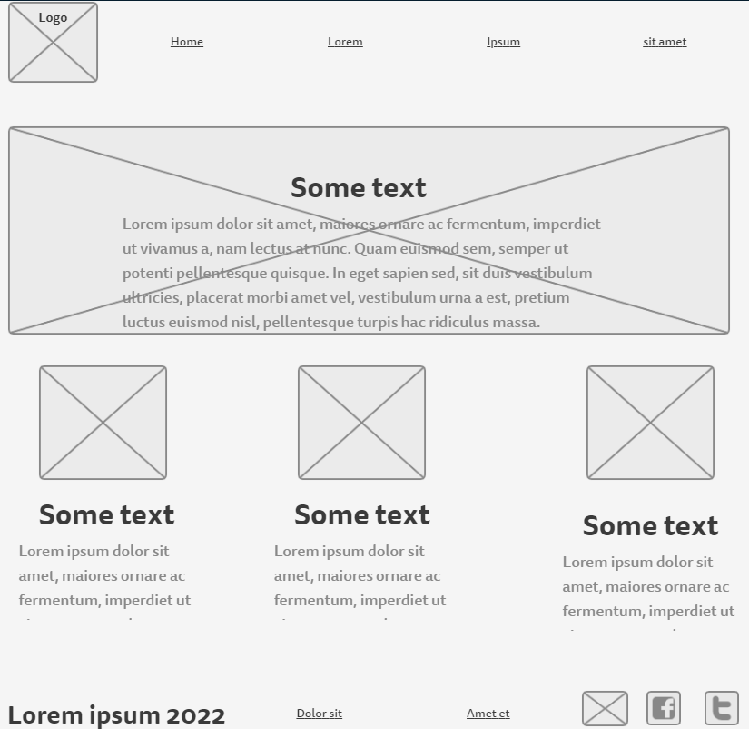

Overview
Purpose
Antifraud solution
Audience
The purpose of this site is to show the advantages of using an anti-fraud solution to prevent fraud from customers in e-commerce. We use the power of artificial intelligence and behavior navigation tools to create the ideal risk analysis model.
Along with the growing number of online shoppers, scam attempts have also increased. The techniques used by fraudsters are the most diverse, so it is important to take precautions in every way to avoid inconvenience and chargebacks.
An anti-fraud solution will avoid some of these problems. With it, all orders from your e-commerce go through a verification process before the purchase is approved by the payment gateway. Good anti-fraud provides more order approvals and fewer chargebacks for your business.
Branding
Website Logo
Style Guide
Color Palette
Palette URL:
https://coolors.co/palette/000000-0cff03-2a7110-585655| Primary | Secondary | Accent 1 | Accent 2 |
|---|---|---|---|
| #000000 | #0CFF03 | #2A7110 | #858382 |
Typography
Heading Font: IM Fell French Canon
Paragraph Font: IM Fell French Canon", Helvetica, sans-serif
Normal paragraph example
More approval and less fraud: Our technology monitors all customer activities during the buying journey. Each store has its own extremely efficient risk model.
Colored paragraph example
Our technology monitors all customer activity during the buying journey. In real-time, we can captured more than 2 thousand variables, such as the origin of the visit, price comparison, time spent on the site, pages visited, number of products, password change, data entry (copy and paste) etc.
Navigation
Site Map
Content
Home page
Innovation, performance and agility.
The best anti-fraud technology.
We work with the power of artificial intelligence and browsing behavior to create the ideal risk analysis model. We are the evolution of anti-fraud.
Choose the ideal Bynary Syndrome solution for your company's needs
Images for the Home page


About Us
Why are we different?
Our experience with e-commerce, payment methods and artificial intelligence motivated us to create a completely innovative anti-fraud. Bynary Syndrome is a world pioneer in the use of machine learning technologies and monitoring of browsing behavior to fight online fraud.
Images for the Page 2


Solutions
We combine the best technologies in the fight against online fraud
Understand Bynary Syndrome's differentials and why we are the most efficient anti-fraud on the market
Solutions


Wireframes
Home
About Us

Solutions